25 Javascript tips
-
Name evaluated files with the sourceURL pragma
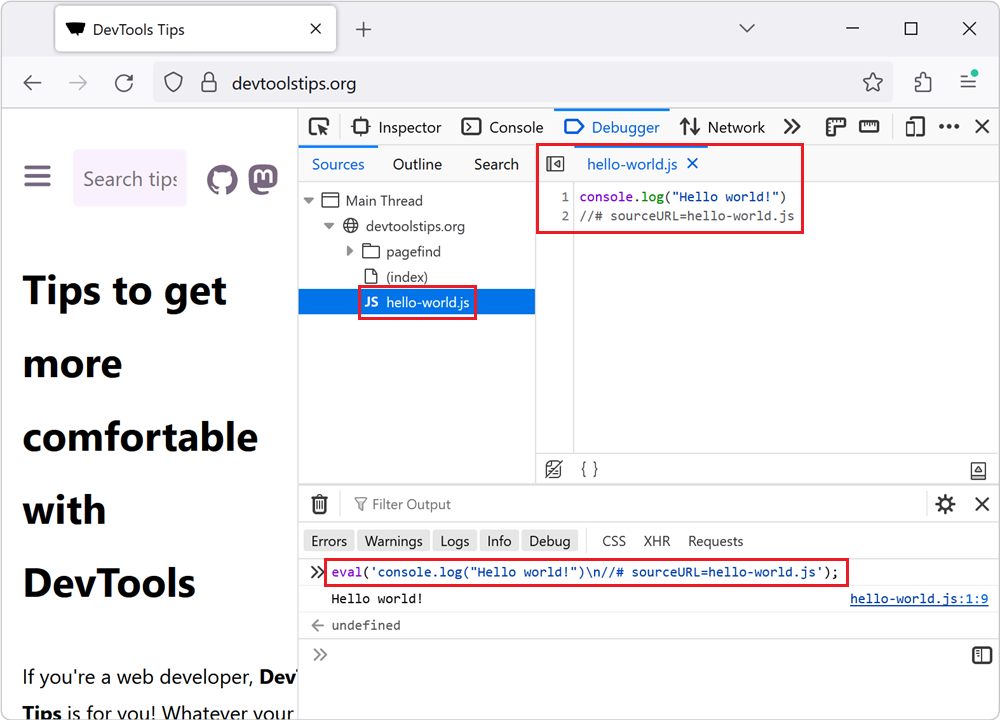
If you insert JavaScript code in a webpage by using the eval() function, or inline <script> tags, you can use the sourceURL pragma to give them a name in DevTools. For example, when using eval()... Read more
-
Force execution, skipping breakpoints, when paused
 When using breakpoints to debug your JavaScript code, sometimes you end up setting many breakpoints in different functions. You might want to keep these breakpoints but not always pause at them. There... Read more
When using breakpoints to debug your JavaScript code, sometimes you end up setting many breakpoints in different functions. You might want to keep these breakpoints but not always pause at them. There... Read more -
Detect unused CSS and JavaScript code
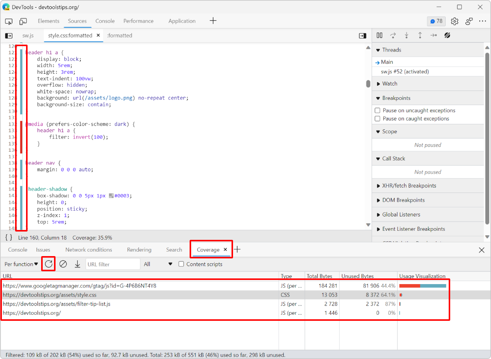
To make sure your webpage loads and appears fast for your users, load only the CSS and JS code that your page requires to appear correctly. If some of your CSS or JS code is only needed later, when th... Read more
-
Disable abusive debugger statements that prevent inspecting websites
 Some websites make it impossible to use DevTools by adding debugger statements in their code. The statements don't do anything for normal users, but as soon as DevTools is opened, the JavaScript execu... Read more
Some websites make it impossible to use DevTools by adding debugger statements in their code. The statements don't do anything for normal users, but as soon as DevTools is opened, the JavaScript execu... Read more -
Manipulate global objects on page load, before other scripts run
 When a page loads, and all of its global objects are ready, but before the JavaScript code of the page actually kicks-in, is a great time to inject debugging code. For example, it might be useful to r... Read moreCategories: Supported by:
When a page loads, and all of its global objects are ready, but before the JavaScript code of the page actually kicks-in, is a great time to inject debugging code. For example, it might be useful to r... Read moreCategories: Supported by: -
Re-use scripts as snippets
 The Console is great to write short JavaScript expressions that read from the document or manipulate it. But it's also a terrible editor. You can actually use a full editor in Edge, Chrome, and Safari... Read more
The Console is great to write short JavaScript expressions that read from the document or manipulate it. But it's also a terrible editor. You can actually use a full editor in Edge, Chrome, and Safari... Read more -
Ignore JavaScript code to ease debugging
 Debugging JavaScript can quickly get out of hand when you have a lot of code and many functions that call each other. What's even worse is when a lot of this code isn't even yours. This can happen whe... Read more
Debugging JavaScript can quickly get out of hand when you have a lot of code and many functions that call each other. What's even worse is when a lot of this code isn't even yours. This can happen whe... Read more -
Edit JavaScript functions while debugging to test a quick fix
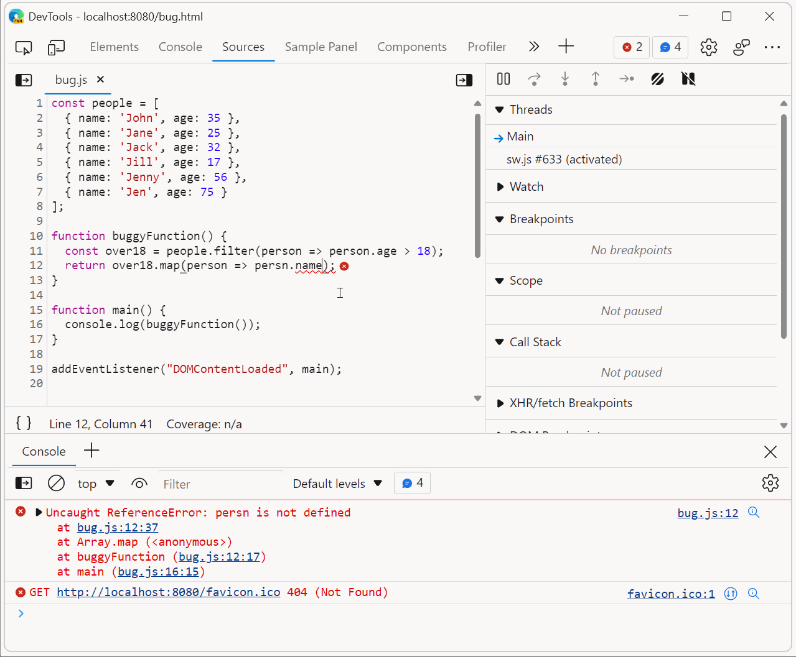
Sometimes, when debugging JavaScript code in DevTools, you may want to test a quick change and see whether that fixes the bug. Usually, this involves the following steps: Pause at a breakpoint, or an... Read more
-
Copy an element's JavaScript path
 JavaScript often needs references to DOM nodes on the page. Getting a reference is sometimes easy with document.getElementById() or similar. Other times however, a more complicated CSS selector needs... Read more
JavaScript often needs references to DOM nodes on the page. Getting a reference is sometimes easy with document.getElementById() or similar. Other times however, a more complicated CSS selector needs... Read more -
Manipulate complex JSON files using DevTools
 I often work with large amount of data that I need to go through and gather interesting information from. Sometimes this data is in JSON format. When that's the case, I like using DevTools to turn it... Read more
I often work with large amount of data that I need to go through and gather interesting information from. Sometimes this data is in JSON format. When that's the case, I like using DevTools to turn it... Read more -
Detect the element with focus at any time
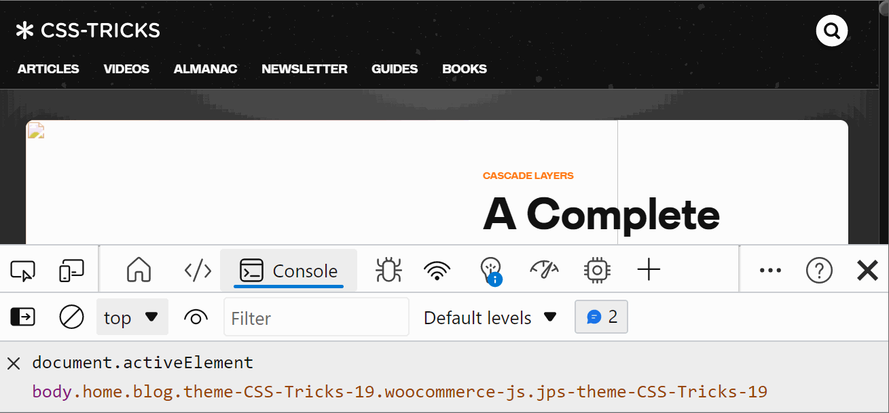
If you want to know which element has the focus on the web page at any time, you can use a live expression in the Console tool. Open the Console. Click the Create live expression button (it looks lik... Read more
-
Remove or disable event listeners
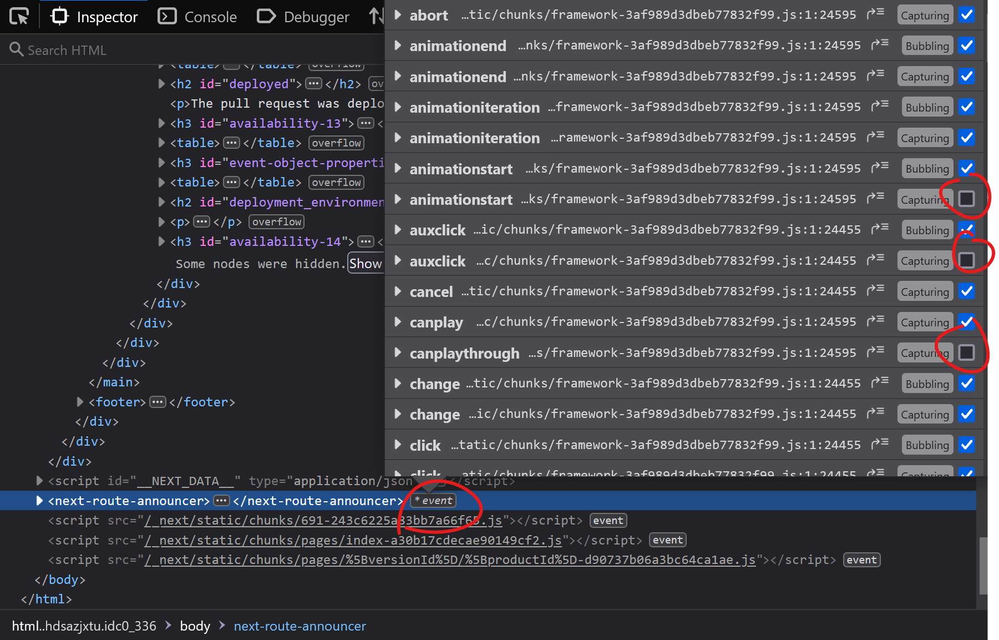
When you're trying to debug something and event listeners on the page keep interfering with what you're doing, it can be frustrating. Imagine a mousemove event listener that changes some of the inform... Read more
-
Copy a CSS rule as CSS-in-JS format
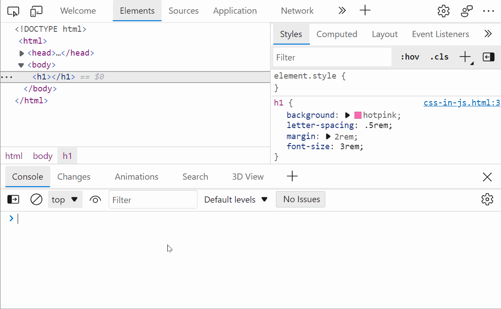
Do you use a CSS-in-JS framework? If so, you know how frustrating it can be to copy CSS from DevTools and paste it into your code. Indeed if the CSS you worked on in the Styles panel looks like this:... Read more
-
Automatically logging name and value in console.log()
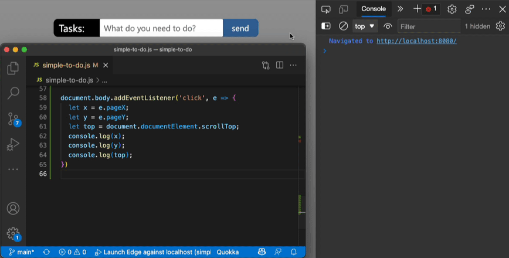
Using the console of DevTools you can to log some information to debug your JavaScript. The common way to do that is to add a console.log() statement where you want to learn the value of a certain var... Read more
-
Cut down on console noise using live expressions
 Using the Console of DevTools to log information that changes a lot is a bad idea. First of all, you flood it with information. Secondly, it can impact the performance of your product. And last but no... Read more
Using the Console of DevTools to log information that changes a lot is a bad idea. First of all, you flood it with information. Secondly, it can impact the performance of your product. And last but no... Read more -
Console.log() for the web with logpoints
 Using the console to log some information is a very common way to debug your JavaScript. But you can also log information in any web site using Logpoints in the sources panel. Here's how to do it: I... Read more
Using the console to log some information is a very common way to debug your JavaScript. But you can also log information in any web site using Logpoints in the sources panel. Here's how to do it: I... Read more -
Pause script execution when the DOM changes
 If you want to know what JavaScript code removes, adds, or modifies a DOM element in the page, you can use DOM breakpoints in DevTools. You can choose to break on: Subtree modification: this pauses e... Read more
If you want to know what JavaScript code removes, adds, or modifies a DOM element in the page, you can use DOM breakpoints in DevTools. You can choose to break on: Subtree modification: this pauses e... Read more -
Play a sound when a line of JavaScript is executed
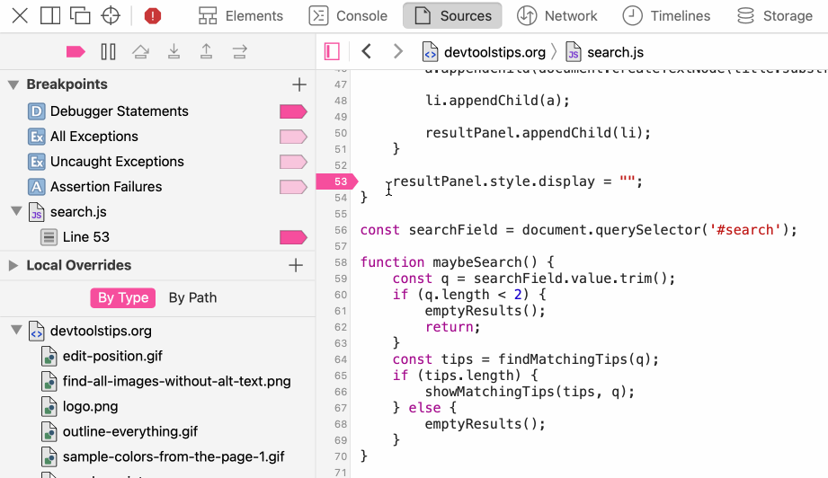
Sometimes pausing execution when a line of JavaScript is executed is too much, sometimes you only want to know that the line was executed at all, not pause there. To do this you can add console.log()... Read moreCategories: Supported by:
-
Capture node creation stack traces
 Have you ever wanted to know what caused a specific DOM node or element to be created in the page? When working on a site that uses a lot of JavaScript and especially when you don't know the codebase,... Read more
Have you ever wanted to know what caused a specific DOM node or element to be created in the page? When working on a site that uses a lot of JavaScript and especially when you don't know the codebase,... Read more -
Event listeners are suppressed when paused
 This is not really a tip, but rather an interesting thing to be aware of when debugging JavaScript. If you use breakpoints in the Sources (or Debugger) tab in DevTools to debug JavaScript, you should... Read more
This is not really a tip, but rather an interesting thing to be aware of when debugging JavaScript. If you use breakpoints in the Sources (or Debugger) tab in DevTools to debug JavaScript, you should... Read more -
Copy an object from the console
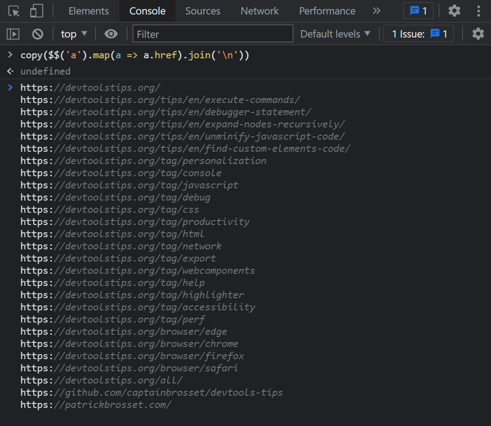
The console panel supports a very handy copy() function that stringifies and copies anything you pass to it as an argument, so you can then paste it somewhere else. For example: copy($$('a').map(a =&g... Read more
-
Find your web component's custom element code
 In Firefox, when inspecting elements (in the Inspector panel), you can click on the custom badge to go straight to the custom element's JavaScript source code.... Read moreCategories: Supported by:
In Firefox, when inspecting elements (in the Inspector panel), you can click on the custom badge to go straight to the custom element's JavaScript source code.... Read moreCategories: Supported by: -
View performance markers in order
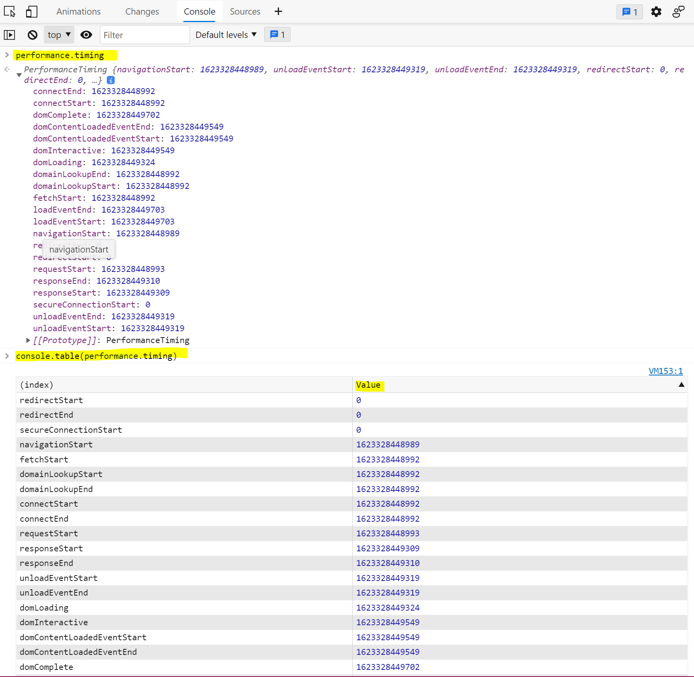
When logging performance.timing events to the console, they appear in alphabetical order since they are properties of the PerformanceTiming object. In order to view them in order, you can use console.... Read more
-
Unminify JavaScript code to easily read and debug it
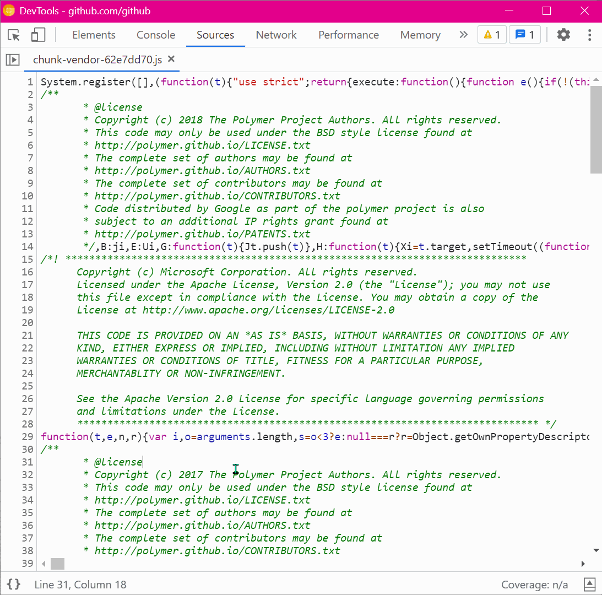
Sometimes, the JavaScript code that runs on a website is minified and really hard to read. This is common in production. You can unminify code in DevTools to read it more easily, and also set breakpoi... Read more
-
Use the debugger statement to pause script execution
 If you prefer to use console.log() statements rather than the JavaScript debugger because you find it difficult to set breakpoints in DevTools (or you can't), then you can use the debugger statement i... Read more
If you prefer to use console.log() statements rather than the JavaScript debugger because you find it difficult to set breakpoints in DevTools (or you can't), then you can use the debugger statement i... Read more
 edge
edge
 chrome
chrome
 firefox
firefox
 safari
safari
 polypane
polypane